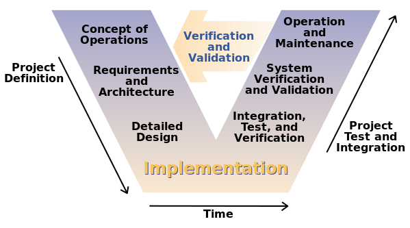

🔍 Description du modèle
Le modèle en V est une évolution du modèle en cascade, qui met en relation explicite les phases de développement avec les phases correspondantes de tests. Cela permet une meilleure détection précoce des erreurs.
🖼️ Schéma illustratif
⚙️ Les phases du modèle
📌 Côté développement
- Exigences (spécifications fonctionnelles)
- Conception du système
- Conception détaillée (architecture technique)
- Codage (implémentation)
📌 Côté test
- Tests d'acceptation (liés aux exigences)
- Tests système (liés à la conception du système)
- Tests d'intégration (liés à la conception détaillée)
- Tests unitaires (liés au codage)
✅ Avantages
- Association claire entre les phases de développement et de tests
- Détection précoce des défauts et des risques
- Excellente visibilité et contrôle sur l’avancement
❌ Inconvénients
- Flexibilité réduite face aux changements tardifs
- Nécessite une définition très précise des exigences dès le début
- Peu adapté aux projets agiles ou aux projets aux exigences incertaines
📋 Cas d’utilisation typiques
- Systèmes critiques (aéronautique, médical, ferroviaire)
- Projets réglementés nécessitant une traçabilité précise
🧪 Rôle des tests dans ce modèle
Les tests interviennent tout au long du cycle de vie logiciel, dès les premières phases de développement, garantissant une meilleure qualité finale du logiciel grâce à une validation continue.
- Tests d’acceptation
- Tests système
- Tests d’intégration
- Tests unitaires